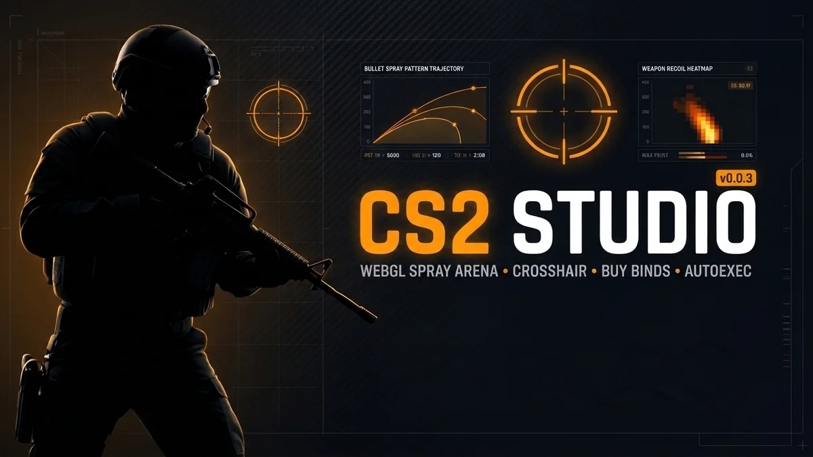
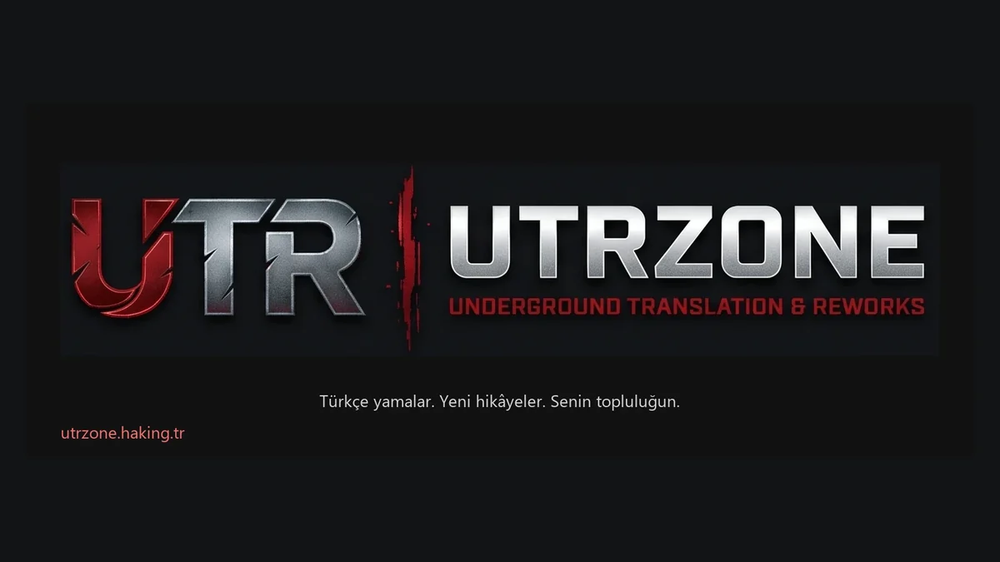
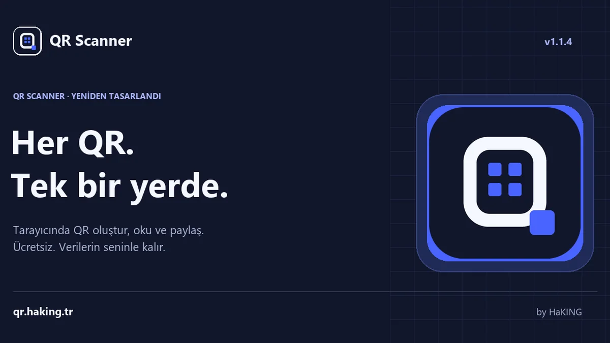
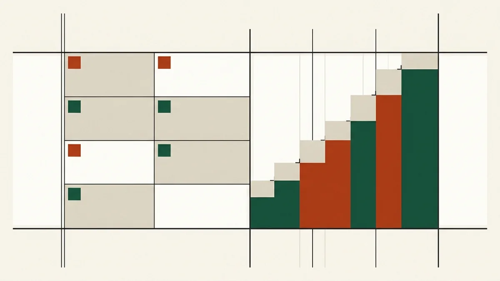
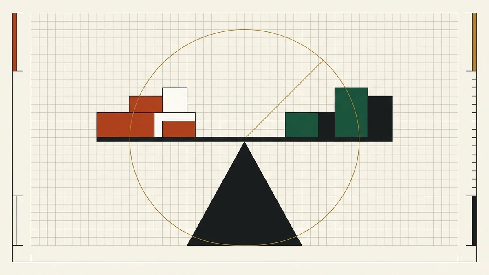
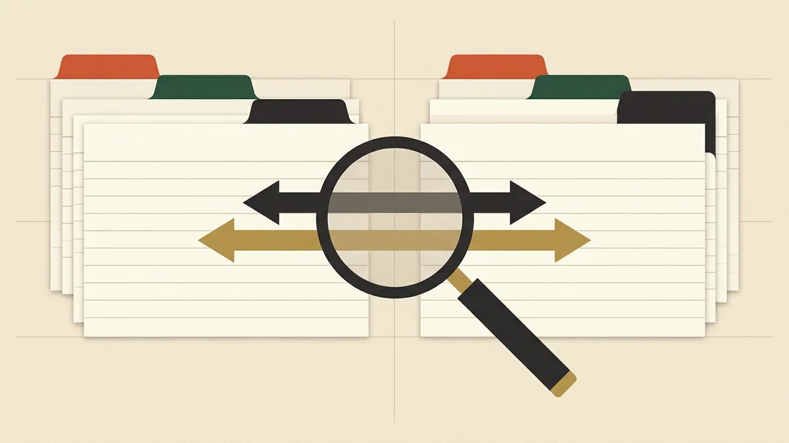
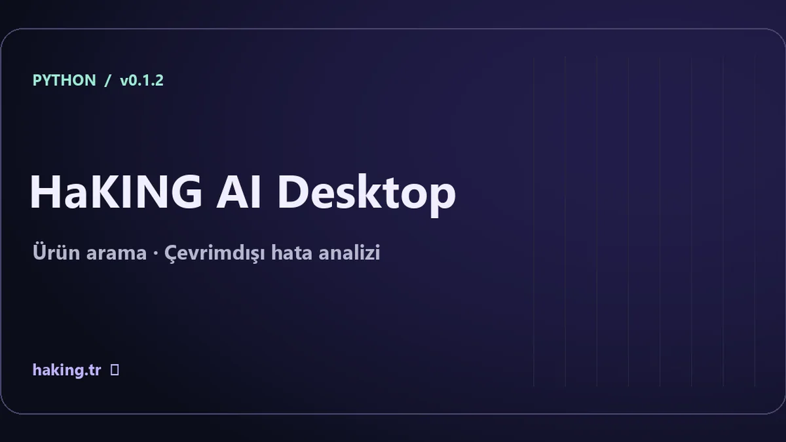

v1.19.2
v1.19.2
HaKING AI
SSE akışlı Türkçe yazılım asistanı, yapılandırılmış Prompt Modu ve Tavily araştırmalı Çılgın Mod.
FastAPISSE AkışıCloudflare Workers
Burada yalnızca github.com/HaKING06 üzerinde herkese açık yayımlanan, gerçek bir kullanıcı akışını çözen ve aktif sürdürülen büyük projeler listelenir. Her karttan çalışan canlı siteye, kaynak koduna veya ayrıntılı teknik inceleme sayfasına doğrudan geçebilirsiniz.
15 proje
v1.19.2
SSE akışlı Türkçe yazılım asistanı, yapılandırılmış Prompt Modu ve Tavily araştırmalı Çılgın Mod.
 V11.1
V11.1
6.000+ skin ve 354+ Doppler fazıyla sıfır kayıtlı, açık kaynak CS2 çift yönlü arbitraj ve risk terminali.
 v12.0
v12.0
60 oynanabilir uzay temalı tarayıcı oyunu ve 24 bölümlük Captain Nova Vex hikâye modunu sunan arcade portalı.

v0.1.03D Dust2 Spray Arenası, 670+ pro e-spor crosshair veritabanı, canlı Viewmodel ve Autoexec yapılandırma paketi.
 v2.0.2
v2.0.2
Gerçek zamanlı geliştirici sohbeti, sesli oda ve sunucu doğrulamalı 3D Okey, Tavla, Satranç & masa oyunları.

v0.11.5Türkçe oyun yamaları, çeviri projeleri ve topluluk modları için modern React/Vite + Express/Neon platformu.
 v2.5.3
v2.5.3
Canlı Steam kütüphane telemetrisi, etkileşimli Three.js 3D HP Victus 16 modeli ve 20 dilli 3D Müze vitrini.
 v1.0.6
v1.0.6
6.000+ HEX renk araması, OKLCH 50–950 tema üretici, WCAG kontrast denetimi ve DTCG/CSS token dışa aktarımı.

v1.1.47 QR veri türü, 2048px PNG/SVG çıktısı ve cihaz içi kamera/görsel taraması sunan gizlilik odaklı web + eklenti paketi.
 v1.4.0
v1.4.0
API anahtarı gerektirmeyen, Alt+T ve sağ tıkla sayfa içi çeviri, çift yönlü kişisel sözlük ve seslendirme eklentisi.
 v3.0
v3.0
Üniversite öğrencileri için tam sayı katkılı vize-final-proje ortalama, gerekli final notu ve çevrimdışı hedef takip platformu.

v1.0.1CS2 eşya alım-satım işlemlerini, pazar komisyonlarını, takas kilidi bitişini ve gerçek net kârı izleyen Türkçe günlük.

v1.0CS2 takas öncesi yatırım maliyeti, kalan bakiye nakit eşdeğeri, komisyon ve net marj senaryo planlayıcısı.

v1.0Türkçe CS2 envanter ve skin adlarını CSFloat / Steam İngilizce pazar isimleriyle anında eşleştiren görselli sözlük.

v0.1.2Yazım hatalarına dayanıklı çevrimdışı hibrit ürün arama motoru (BM25 + TF-IDF) ve yazılım hata imzası sınıflandırıcısı.
Aramanızla eşleşen proje bulunamadı. Farklı bir anahtar kelime veya kategori deneyin.
Doğru projeyi saniyeler içinde seçebilmeniz için tüm 15 açık kaynak ürünün odak alanı, veri saklama modeli ve canlı erişim tablosu.
| Proje | Sürüm | Odak Alanı | Veri & Gizlilik Modeli | Erişim |
|---|---|---|---|---|
| HaKING AI | v1.19.2 | SSE akışlı Türkçe yazılım asistanı, yapılandırılmış Prompt Modu ve Tavily araştırmalı Çılgın Mod. | Sunucu API + güvenli hesap/oturum | Canlı ↗ |
| SPREAD | V11.1 | 6.000+ skin ve 354+ Doppler fazıyla sıfır kayıtlı, açık kaynak CS2 çift yönlü arbitraj ve risk terminali. | Yerel öncelikli / sıfır hesap | Canlı ↗ |
| COSMIC Universe | v12.0 | 60 oynanabilir uzay temalı tarayıcı oyunu ve 24 bölümlük Captain Nova Vex hikâye modunu sunan arcade portalı. | Yerel öncelikli / sıfır hesap | Canlı ↗ |
| CS2 Studio | v0.1.0 | 3D Dust2 Spray Arenası, 670+ pro e-spor crosshair veritabanı, canlı Viewmodel ve Autoexec yapılandırma paketi. | Yerel öncelikli / sıfır hesap | Canlı ↗ |
| Haking Chat | v2.0.2 | Gerçek zamanlı geliştirici sohbeti, sesli oda ve sunucu doğrulamalı 3D Okey, Tavla, Satranç & masa oyunları. | Sunucu API + güvenli hesap/oturum | Canlı ↗ |
| UTRZONE | v0.11.5 | Türkçe oyun yamaları, çeviri projeleri ve topluluk modları için modern React/Vite + Express/Neon platformu. | Sunucu API + güvenli hesap/oturum | Canlı ↗ |
| HaKING 3D Vault | v2.5.3 | Canlı Steam kütüphane telemetrisi, etkileşimli Three.js 3D HP Victus 16 modeli ve 20 dilli 3D Müze vitrini. | Yerel öncelikli / sıfır hesap | Canlı ↗ |
| CopyHex | v1.0.6 | 6.000+ HEX renk araması, OKLCH 50–950 tema üretici, WCAG kontrast denetimi ve DTCG/CSS token dışa aktarımı. | Yerel öncelikli / sıfır hesap | Canlı ↗ |
| QR Scanner | v1.1.4 | 7 QR veri türü, 2048px PNG/SVG çıktısı ve cihaz içi kamera/görsel taraması sunan gizlilik odaklı web + eklenti paketi. | Yerel öncelikli / sıfır hesap | Canlı ↗ |
| ÇevirmenX | v1.4.0 | API anahtarı gerektirmeyen, Alt+T ve sağ tıkla sayfa içi çeviri, çift yönlü kişisel sözlük ve seslendirme eklentisi. | Yerel öncelikli / sıfır hesap | Canlı ↗ |
| NotMatik | v3.0 | Üniversite öğrencileri için tam sayı katkılı vize-final-proje ortalama, gerekli final notu ve çevrimdışı hedef takip platformu. | Yerel öncelikli / sıfır hesap | Canlı ↗ |
| CSELL | v1.0.1 | CS2 eşya alım-satım işlemlerini, pazar komisyonlarını, takas kilidi bitişini ve gerçek net kârı izleyen Türkçe günlük. | Yerel öncelikli / sıfır hesap | Canlı ↗ |
| HaKING TradeCalc | v1.0 | CS2 takas öncesi yatırım maliyeti, kalan bakiye nakit eşdeğeri, komisyon ve net marj senaryo planlayıcısı. | Yerel öncelikli / sıfır hesap | Canlı ↗ |
| CSNAME | v1.0 | Türkçe CS2 envanter ve skin adlarını CSFloat / Steam İngilizce pazar isimleriyle anında eşleştiren görselli sözlük. | Yerel öncelikli / sıfır hesap | Canlı ↗ |
| HaKING AI Desktop | v0.1.2 | Yazım hatalarına dayanıklı çevrimdışı hibrit ürün arama motoru (BM25 + TF-IDF) ve yazılım hata imzası sınıflandırıcısı. | Yerel öncelikli / sıfır hesap | GitHub ↗ |
HaKING ekosistemindeki her ürün, yayınlanmadan önce üç temel sorudan geçer: Kullanıcıdan gereksiz veri isteniyor mu?, hata ve sınır durumları açıkça yönetiliyor mu? ve kaynak kodu şeffaf biçimde incelenebilir mi?
QR Scanner, CopyHex, NotMatik, CSELL, TradeCalc, CS2 Studio ve SPREAD gibi araçlar mümkün olan en yüksek oranda tarayıcı içinde (client-side / local-first) çalışır; bu sayede kullanıcılar hesap açmadan, beklemeden ve verilerini buluta yüklemeden sonuç alır. Sunucu gerektiren HaKING AI, Haking Chat ve UTRZONE projelerinde ise ön yüz ile API katmanı kesin biçimde ayrılır.